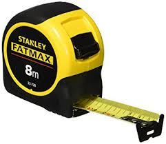

| NiveauCAP IFCA 1A |
DomaineDécouverte de l'atelier — atelier FAÇONNAGE |
Séance 2 · 2 hVérifier l'état et constituer les lots |
SéquenceS0 · rentrée 2026 |
| Nom________________ |
Prénom________________ |
Date________________ |
Ma famille________________ |
Ma mission du jour
Ordre d'intervention n° OI-2026-S0S2-01. Hier, vous avez trié les outils par famille. Aujourd'hui, votre
équipe devient le contrôleur qualité de sa famille. Vous testez chaque outil, un par un. Vous cherchez
15 exemplaires utilisables. Ce qui manque, vous le notez : c'est votre bon de commande.
Objectifs — je serai capable de…
- vérifier avec prudence l'état d'un outil selon 3 critères (Bon / À réviser / Hors service) ;
- relever et noter la dimension gravée sur une cintreuse cuivre, avant de juger son état ;
- compter mes outils « Bon » jusqu'à 15, famille par famille, sur ma fiche de comptage ;
- trier à part, dans le bac TRANSFERT, un outil qui n'est pas de mon atelier ;
- expliquer où va un outil hors service (jamais à la poubelle).
Prérequis — je sais déjà…
Je sais déjà nommer les outils de ma famille (séance 1, hier). Je connais les zones de l'atelier et mes EPI
de base. Aujourd'hui, je découvre les 3 critères d'état : c'est nouveau. Je signale, je ne répare pas.
Matériel
- Le bac de ma famille, trié hier
- 3 bacs vides étiquetés : Bon / À réviser / Hors service
- Ma fiche de comptage (feuille 2)
- Ce document + crayon
Sécurité — risques et parades
| Risque | Parade |
|---|
| Coupure sur la molette d'un coupe-tube | Je tiens toujours l'outil par le corps, jamais sur le tranchant de la molette. |
| Pincement en testant l'articulation d'une pince ou d'une cintreuse en force | Je ne force jamais. Si ça bloque : c'est « à réviser », je passe au suivant. |
| Écrasement de doigt en testant le mécanisme d'une cintreuse | Je garde les doigts hors de la gorge de cintrage pendant le test. |
⚠ Manipulation prudente
Je ne connais pas encore l'état de cet outil. Avant de
le tester ou de m'en servir, je regarde toujours d'abord : la molette ou les mâchoires, l'articulation, le
filetage. Un outil électroportatif, s'il s'en trouve un, ne se branche jamais sans ce contrôle
visuel préalable (câble, carter).
❄ inerWeb Édu — par F. Henninot · créé le 02/09/2026 · ©
LPP
JACQUES RAYNAUD
S0 · Séance 2 · Atelier Façonnage — document élève
Les 3 critères — comment je juge l'état d'un outil
Les critères sont affichés à mon poste
Le tableau Bon / À réviser / Hors service de chaque famille est sur l'affiche du poste
(atelier Façonnage). Je la lis avant de commencer, et j'y reviens dès que j'hésite.
Pour une cintreuse : je relève et je note la dimension gravée avant de juger l’état.
OVNI : un outil que je ne reconnais pas du tout ne se teste
pas — je le pose dans le bac OVNI, pour la restitution de la séance 3. TRANSFERT : un outil que je
reconnais mais qui n'est pas du façonnage (ex. une pince à dénuder) ne se teste pas ici non plus — je le pose
dans le bac TRANSFERT, l'atelier Électrique le contrôlera.
Réalisation
- Je prends un exemplaire de ma famille dans le bac trié hier.
- Je regarde l'outil (mâchoires, molette, articulation, filetage) sans forcer.
- Je compare aux 3 critères et je décide : Bon / À réviser / Hors service.
- Je pose l'outil dans le bon bac et je coche ma fiche de comptage.
- Je recommence jusqu'à avoir testé tout le bac de ma famille.
- Je compte mes « Bon » : si j'atteins 15, ma famille est complète. Sinon, je note combien il en manque.
Ma fiche de comptage — mon bon de commande
Chaque équipe complète la ligne de sa famille. Les lignes TRANSFERT
et OVNI reçoivent les outils qui ne sont pas de mon atelier ou pas identifiés : on ne les teste pas, on ne vise
pas 15. Chaque diamètre de cintreuse se compte à part : une cintreuse 1/2" ne remplace pas une 1/4".
| Famille | Testés | Bon | À réviser | HS | 15 atteint ? | Manque |
|---|
| Pinces multiprise débrayables | | | | | ☐ Oui ☐ Non | |
| Coupe-tubes | | | | | ☐ Oui ☐ Non | |
| Cintreuse cuivre 1/4" | | | | | ☐ Oui ☐ Non | |
| Cintreuse cuivre 3/8" | | | | | ☐ Oui ☐ Non | |
| Cintreuse cuivre 1/2" | | | | | ☐ Oui ☐ Non | |
| Cintreuse cuivre 5/8" | | | | | ☐ Oui ☐ Non | |
| Cintreuse 3 diamètres (1/4 · 5/16 · 1/2) | | | | | ☐ Oui ☐ Non | |
| Cintreuse plombier | | | | | ☐ Oui ☐ Non | |
| Outils mécaniques (clé plate, clé à pipe) | | | | | ☐ Oui ☐ Non | |
| TRANSFERT (déposé, non testé) | | — | — | — | — | — |
| OVNI (déposé, non testé) | | — | — | — | — | — |
Familles partagées — comptage indicatif (pas un lot officiel de 15)
Ces familles se comptent aussi côté Électrique. On ne vise pas 15
précis, et le contrôle d'état est moins strict : c'est pour que Franck sache combien il en a au total.
| Famille | Nombre trouvé | Remarque |
|---|
 Mètres-rubans | | |
| Clés à molette | | |
Un outil hors service ne va jamais à la poubelle
Comme les chutes de métal vues hier, un outil hors service part dans le bac de tri des métaux, pour
être recyclé. Un outil « à réviser » n'est pas jeté non plus : il attend dans son bac une décision du
professeur (réparation ou réforme).
Documents à remettre
Ma fiche de comptage complétée (feuille 2 de ce document).
D'après : « 01-Outillages et
protections.pdf » (DOSSIER MATERIELS & EQUIPEMENTS, désignations et fonctions) ; « Liste outillage élèves —
prise en charge caisse.xlsx » (désignations réelles de la dotation). Photos : « 02-Outillage atelier.docx »
(pince multiprise) ; « coupe tube C1 TP1.pdf » (coupe-tube) ; « Préparation organisation de mon poste de
travail.pptx » (mètre-ruban) ; « CINTREUSE ITE TRIPLE RAYON DE CINTRAGE.pdf » (cintreuse cuivre). Pas de photo
fiable trouvée pour la cintreuse plombier ni pour la clé à molette (famille partagée) : croquis simple à
l'atelier, à venir.
❄ inerWeb Édu — par F. Henninot · créé le 02/09/2026 · ©